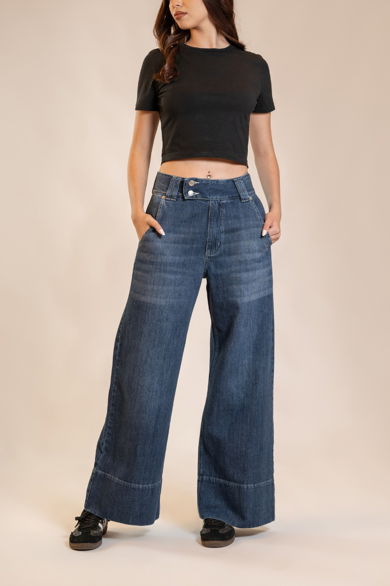
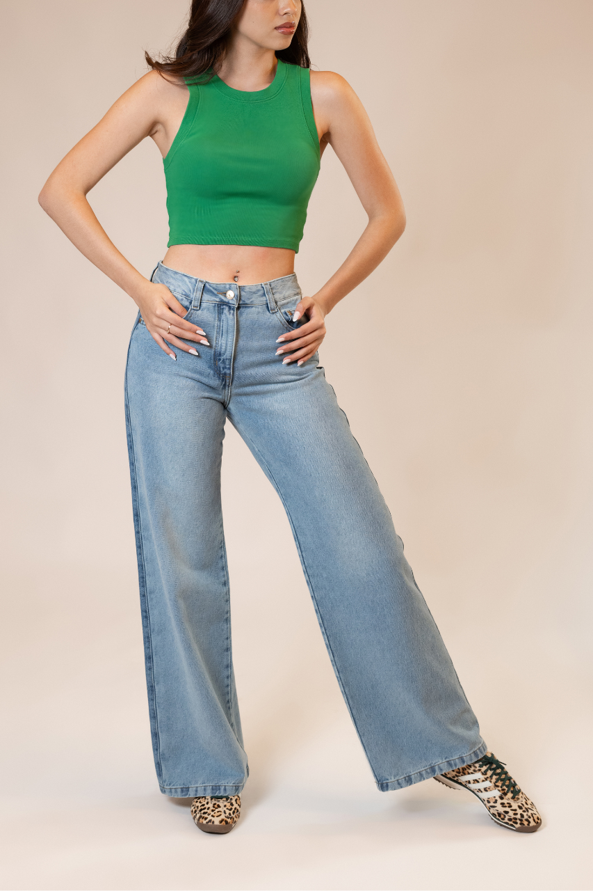
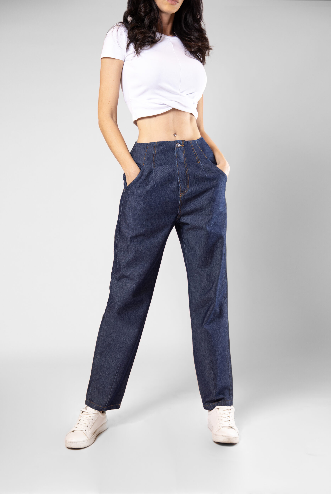

Leer y adivinar qué pide
Buscar el modelo en la web
Revisar precio y oferta
Buscar a la cliente en pedidos
Escribir y copiar plantillas
Enviar… y volver a empezar
La cliente espera y compra en otra tienda.
Se ofrece una talla que ya no hay.
590 Bs… cuando estaba en oferta a 531 Bs.
Talla mal elegida = otro envío y más costo.
Cada respuesta es distinta.
Nadie recuerda a la cliente frecuente.
Entiende qué pide
Talla y Ref
Stock, precio, pedidos
Recomienda modelos
Arman el borrador
Cambia el tono
Nada inventado
Muestra el borrador
Decide y envía
preciotienda físicaCorre en la laptop, sin internet.


